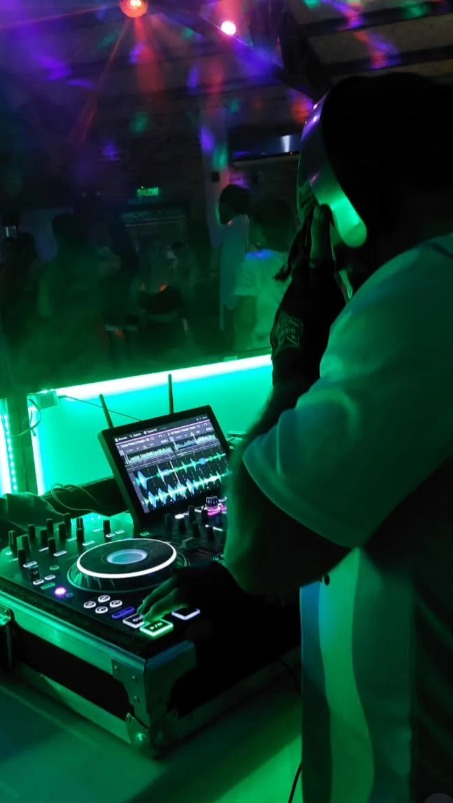
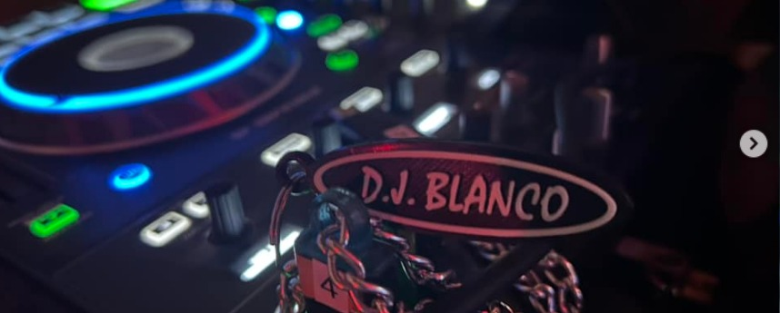
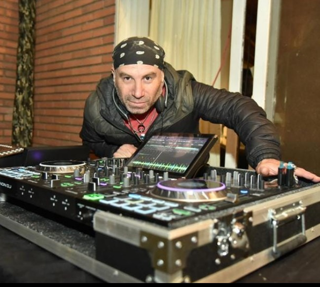
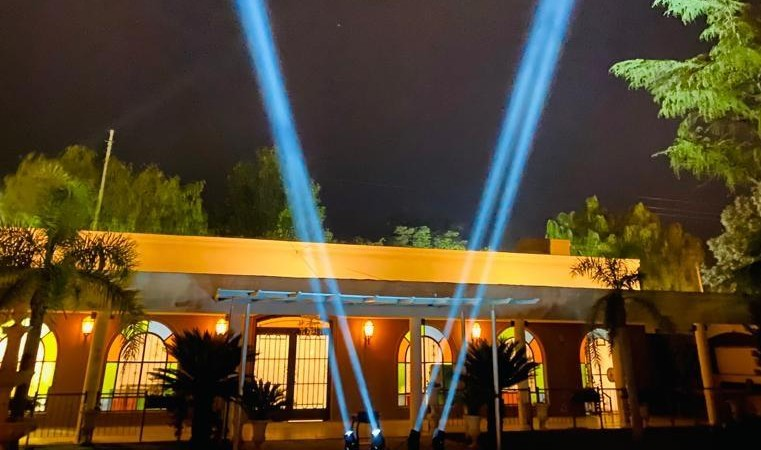
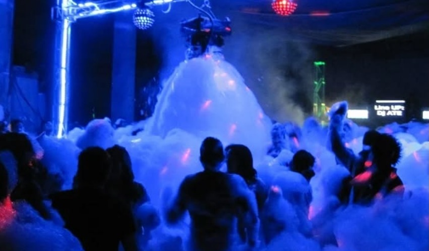

DJ Profesional
Musicalización para fiestas sociales, eventos privados, empresariales y celebraciones especiales. Sets adaptados al público y al clima del evento.

Mi camino en la música comenzó muy joven, a los 14/15 años, impulsado por una pasión genuina por el sonido, el espectáculo y la energía que se genera en cada evento. Con el paso del tiempo, esa pasión se transformó en un proyecto sólido y profesional, construido a base de experiencia, constancia y compromiso. A lo largo de más de dos décadas de trayectoria, fui creciendo junto a cada evento, aprendiendo a leer al público, a cuidar los detalles y a entender que cada celebración es única. Ese recorrido está respaldado por cientos de eventos realizados, clientes satisfechos y reseñas positivas que avalan cada presentación. Hoy trabajo de manera integral en la musicalización y producción técnica de eventos, con una mirada cercana y personalizada. Me involucro en cada etapa del proceso, escuchando las ideas, entendiendo las expectativas y acompañando hasta el último minuto del evento para asegurar un resultado prolijo, profesional y memorable. La responsabilidad, la puntualidad y el compromiso son pilares fundamentales de mi forma de trabajar. Cada show es una oportunidad para crear una experiencia que no solo se escuche, sino que también se viva y se sienta.

Musicalización para fiestas sociales, eventos privados, empresariales y celebraciones especiales. Sets adaptados al público y al clima del evento.

Equipos de alta potencia y fidelidad, configurados según el espacio para garantizar claridad, impacto y una experiencia sonora de primer nivel.

Iluminación decorativa, robótica, láser y efectos visuales que transforman el espacio y potencian cada momento del evento.

Humo, nieve, espuma y efectos de impacto visual que elevan la experiencia y generan un verdadero clima de show.
Reservas, contrataciones y consultas